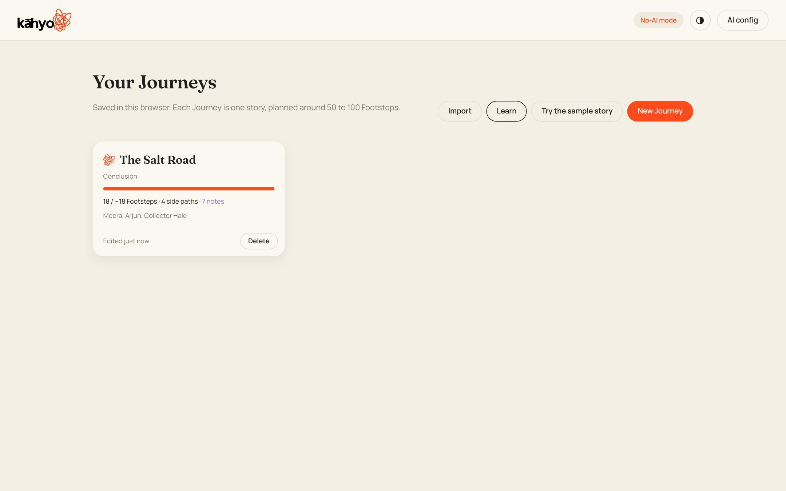
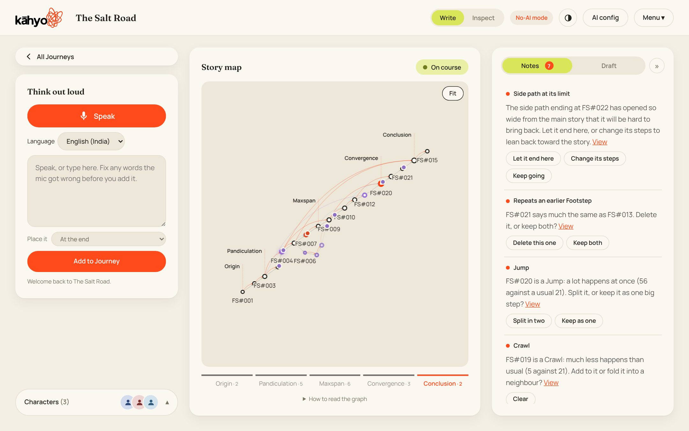
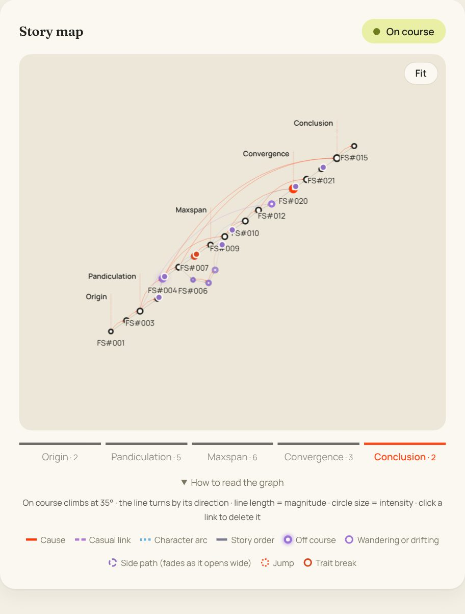
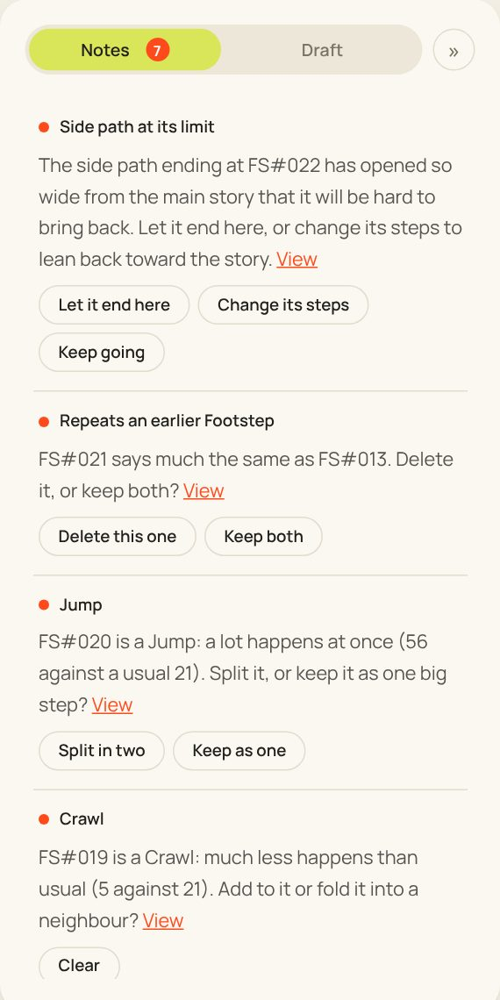
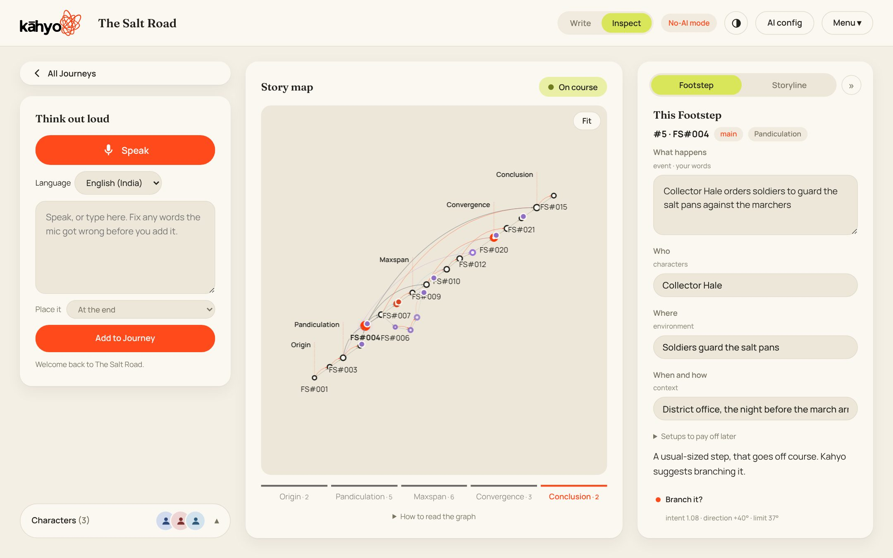
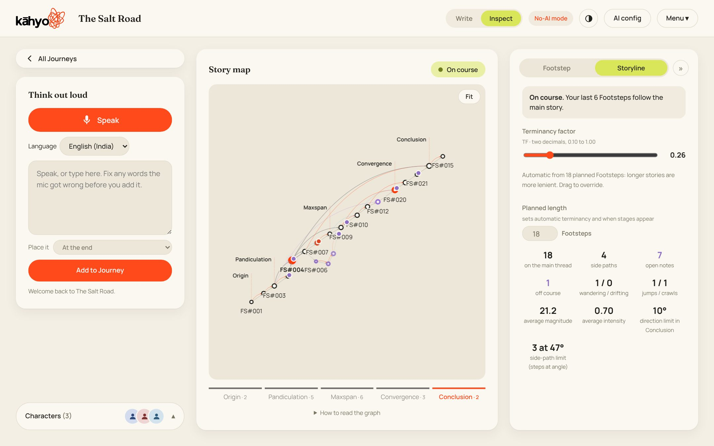
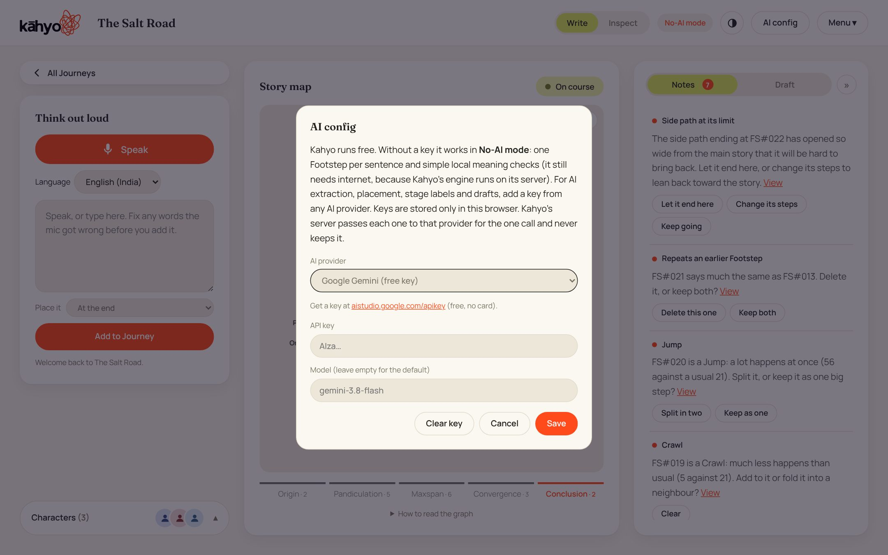
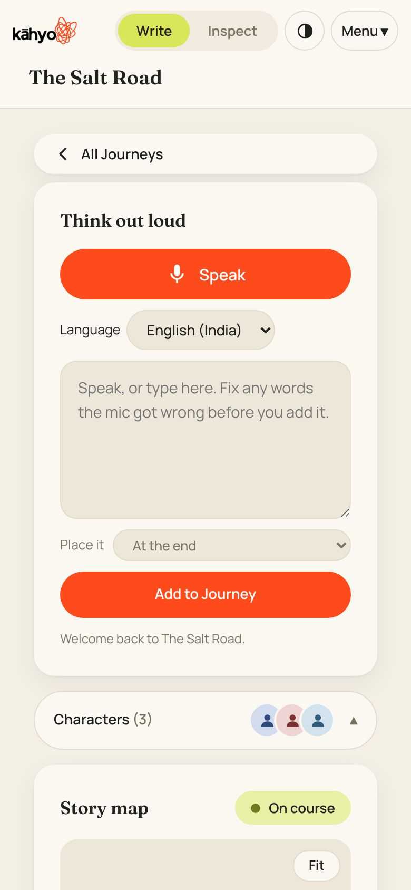

Open Kahyo
Open KahyoLearn Kahyo
Kahyo turns your spoken or typed ideas into a map of your story. It quietly notices when the story wanders, when too much or too little happens, and when a side path goes too far, so you can decide what to do. Every screenshot below is numbered; the list beside it explains each part.
1Your Journeys
Each Journey is one story. Everything is saved in this browser for now (accounts are coming).

12345- New Journey starts a story. Give it a title and a planned length (how many Footsteps you expect, usually 50 to 100).
- Sample story opens The Salt Road, a finished example that shows every feature.
- Import brings back a Journey you exported as a .json file.
- Learn opens this page.
- A saved Journey. Click it to keep writing. Its card shows how far the story has got.
2Write: add your story one idea at a time
Write is the calm view. Speak or type an idea, and Kahyo turns it into a Footstep on the map.

123456789101112- Speak turns on the mic. Talk naturally; filler words are dropped.
- Type or fix. The mic's words land here. Fix anything it got wrong; while you type, the mic pauses so your fix stays.
- Place it chooses where the idea goes: at the end, right after a Footstep, or continuing a side path.
- Add to Journey makes the Footstep. One idea becomes one Footstep; if you said two things, Kahyo offers to split them.
- Characters lists everyone in the story, with their traits and looks. Kahyo warns when someone acts out of character.
- Story pill tells you, in one word, how the main story is going: On course, Wandering a little, or Drifting. Side paths never count here.
- Story map draws every Footstep. See the next section.
- Stages: Origin, Pandiculation, Maxspan, Convergence and Conclusion. They appear once enough Footsteps exist.
- Notes are Kahyo's quiet comments. They never interrupt you, and stay until you clear them.
- Draft builds a scene-by-scene helper draft from your main story.
- Write / Inspect switches between the calm view and the detailed view.
- AI config is where you add an AI key. Without one, Kahyo runs in No-AI mode.
3Reading the story map
The map is your story as a path. Each circle is a Footstep and each line joins two of them.

1234- Story pill. Click it to see why it says what it says.
- Fit zooms to show the whole Journey. Drag to move, scroll or pinch to zoom.
- Stages show how far along the story is, with how many Footsteps are in each.
- How to read it opens the legend: what each line and ring means.
4Notes: Kahyo's quiet comments
Each note names a Footstep, says what Kahyo noticed, and gives you the choice. You are always the author.

1234- Side path at its limit. A side path has wandered so wide from the main story it would be hard to bring back. It appears once, on the path's last Footstep.
- Your choice: let it end there, change its steps, or keep going anyway.
- Repeat. This Footstep says much the same as an earlier one. Delete it or keep both.
- Jump. A lot happens at once. Split it, or keep it as one big step.
5Inspect: one Footstep up close
Click any circle on the map. Inspect shows that Footstep's details, which you can edit.

123- Footstep tab: the selected Footstep.
- Storyline tab: the whole story's settings and numbers.
- Its packet: what happens, who, where, when and how, and setups to pay off later. Edit any field; Kahyo re-reads it.
6Storyline: the whole story
Settings and numbers for the whole Journey.

1234- Why the pill says this, in plain words.
- Terminancy factor sets how lenient Kahyo is. It is automatic from the planned length (longer stories are more lenient); drag to override.
- Planned length is how many Footsteps you expect. It sets when stages appear.
- Story numbers: Footsteps on the main story, side paths, open notes, Jumps and Crawls, and more.
7AI config
Kahyo works without AI, but an AI key makes it understand your story much better.

1234- AI provider: Google Gemini or Groq (both have free keys), Claude, OpenAI, OpenRouter, or another compatible service.
- Your key is stored only in this browser. Kahyo's server passes it to your provider for each call and never keeps it.
- Model: leave it empty to use the default.
- Save. The badge at the top changes from No-AI mode to your provider's name.
8On a phone

Kahyo works on a phone too. The map sits above the writing box. Pinch to zoom the map, and tap a circle to select it.
Undo (↶, or Ctrl+Z on a computer) takes back your last change: an add, a delete, a split or an edit.
To delete a Footstep, select it and press Delete or Backspace, or use the Footstep panel in Inspect.
9Words Kahyo uses
- Journey
- One story, from first idea to the end.
- Footstep
- One idea: one thing that happens. Named FS#001, FS#002 and so on.
- Main story
- The line your story follows from start to end.
- Side path
- A "what if" that leaves the main story. It can continue, end, or come back into the main story.
- Rejoin
- A side path can meet the main story again, like a missing character who comes back for the final fight. It shows as a dashed amber line into the main story. Kahyo spots it, or set it yourself in Inspect with "Meets the main story at".
- Sub-path
- A side path that leaves another side path.
- On course
- The Footstep keeps heading where the story was going.
- Wandering
- It turns a little away.
- Drifting
- It turns further away. On the main story only; a side path that drifts gets a note saying Kahyo is letting it drift.
- Off course
- It turns past the limit for this stage of the story.
- Branch it?
- Kahyo suggests turning a Footstep into a side path when a lot happens in a strange direction.
- Jump and Crawl
- A Jump is far more happening than usual in one step; a Crawl is far less.
- Intensity
- How big the event is (circle size).
- Terminancy
- How far a side path can wander before it would be too hard to bring back. Later stages of the story are stricter.
- Stages
- Origin, Pandiculation (the story stretches open), Maxspan (it is at its widest), Convergence (threads pull together), Conclusion.
- No-AI mode
- Kahyo without an AI key: one Footstep per sentence and simpler checks. It still needs internet.